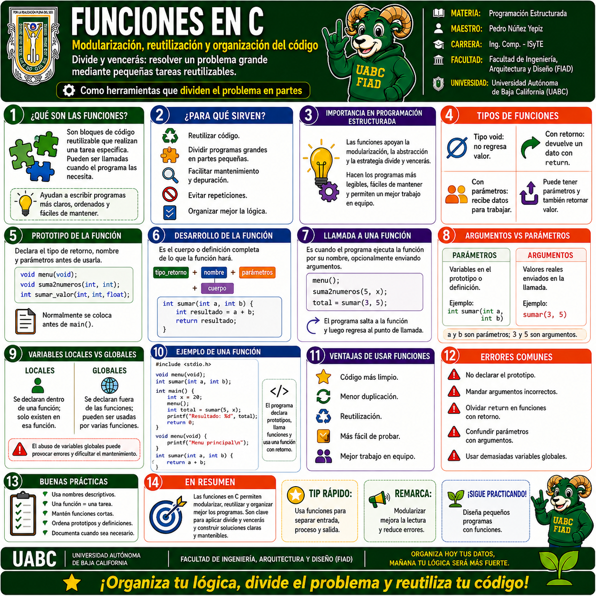
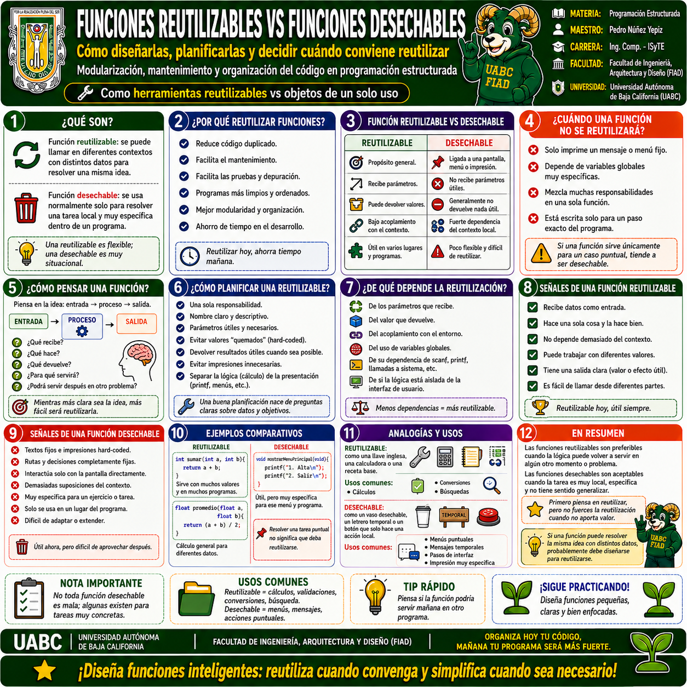
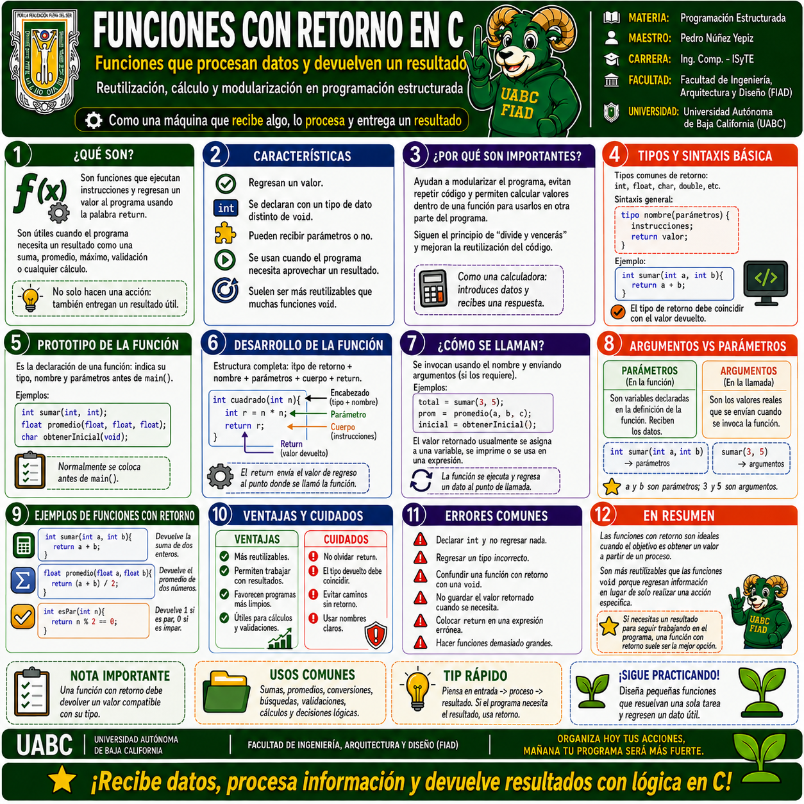
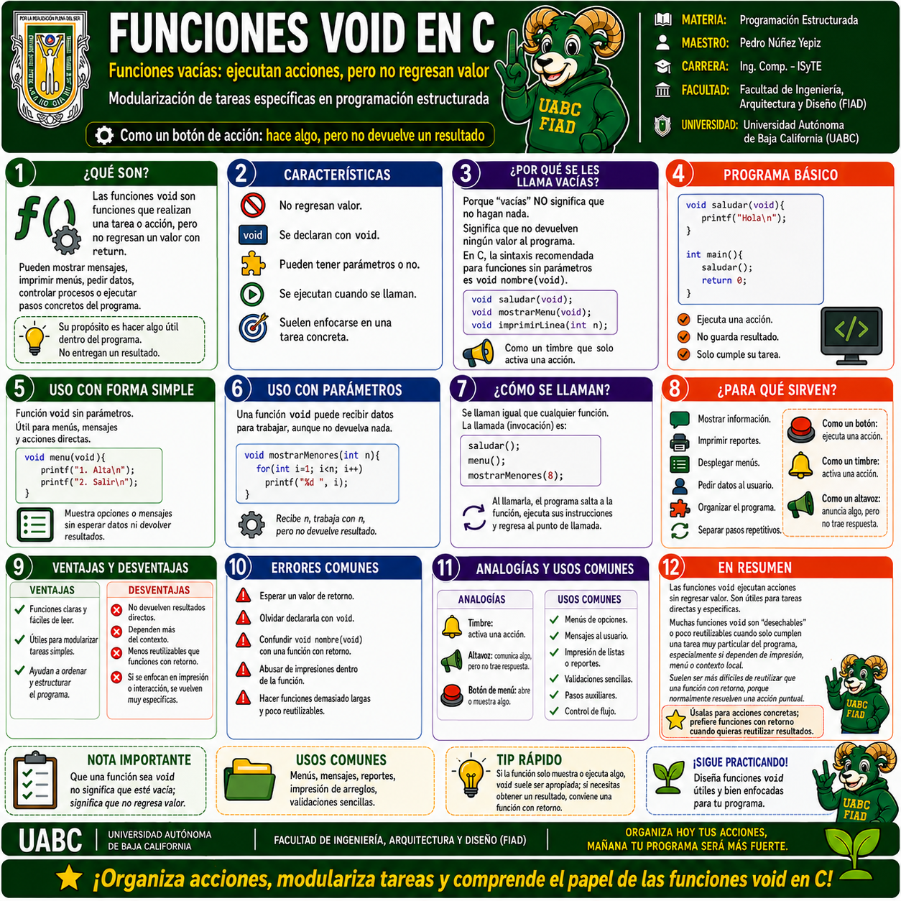
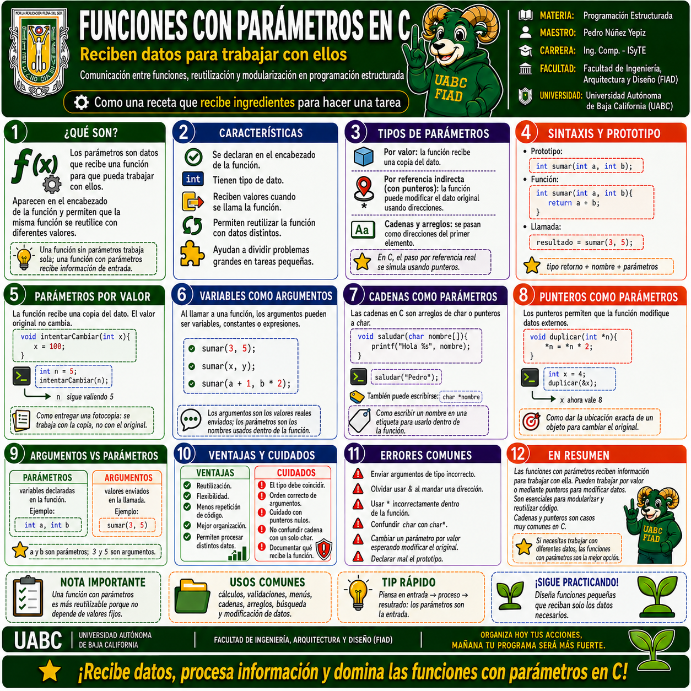

1 · Funciones en C · Conceptos fundamentales
Qué son las funciones, para qué sirven, tipos, prototipo, desarrollo, llamada, argumentos, parámetros, variables locales y globales, ventajas, errores comunes y buenas prácticas.
Selecciona cualquier infografía para abrirla a pantalla completa. En la vista ampliada puedes usar Zoom +, Zoom −, las flechas anterior/siguiente o la tecla Esc para cerrar.

Qué son las funciones, para qué sirven, tipos, prototipo, desarrollo, llamada, argumentos, parámetros, variables locales y globales, ventajas, errores comunes y buenas prácticas.

Cómo diseñar y planificar funciones, cuándo conviene reutilizar, señales de una función reutilizable, cuándo una función es local o desechable y cómo reducir dependencias.

Funciones que procesan datos y devuelven un resultado mediante return. Incluye prototipo, desarrollo, llamadas, tipos de retorno, argumentos, parámetros y ejemplos.

Funciones que ejecutan acciones sin devolver un valor. Explica sintaxis, llamadas, usos con y sin parámetros, ventajas, desventajas, analogías y errores comunes.

Parámetros por valor, variables como argumentos, cadenas, arreglos y punteros como parámetros, además de la diferencia entre parámetros y argumentos.